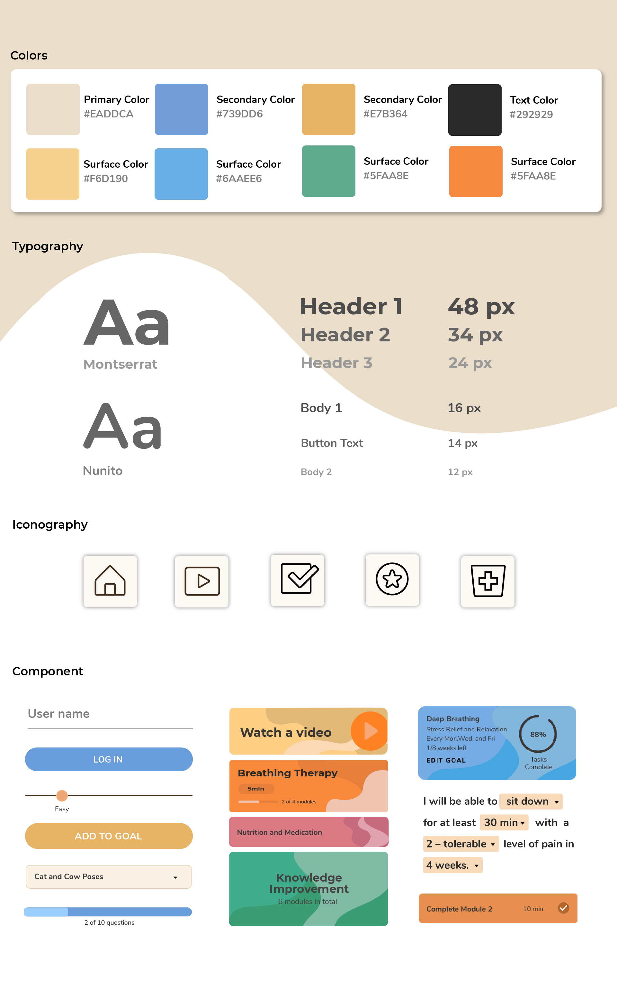

SPINE
Overview
The Spine app is a self-management platform designed to help people ages 18-60 years with chronic low back pain(cLBP) to better deal with pain and enhance living well. It is part of a research study of the School of Nursing, University of Connecticut.
It provides video modules focused on physical activity and biweekly phone consultation from nurses to facilitate symptom monitoring and problem-solving. It also encourages patients to establish their goals and keep track of them in order to help patients enhance self-management skills. Our team is tasked to redesign the app and improve the user experience.
Role
User Research, UI/UX design, Motion Design
Team
Yucheng Hang, Renoj Varghese
Tool
Adobe Illustrator, Sketch, After Effects, InVision
INTERACTIVE PROTOTYPE
RESEARCH PROCESS
Review of Current App
The design team reviewed the current app alongside stakeholders to gain an understanding of the requirements.Some limitations of the current app were:
- Users lacked the ability to manage their goals.
- Users were frustrated when going through video modules.
- The modules lacked appeal.
- Researchers were not able to track user activities.
The Origianl UI
Key Insights
After reviewing the current app with stakeholders, we listed all the limitations and problems and concluded into 3 key insights.
01
Users had trouble navigating the important tasks of understanding learning modules, logging physical activity,and tracking goals.
02
Not much time was dedicated to the visual design and feeling of the app.
03
Video modules are not engaging to users to follow and complete activities.
Opportunities
Based on the key insights, we came up with 3 opportunities aligned with them which we believe can help improve the usability of the app and promote the overall user experience.
01
Improve the usability of the app to make it easier for users to fully engage in managing chronic back pain.
02
Develop a suitable and appealing visual design language.
03
Provide engaging and interactive modules to help patients gain positive learning experience.
REDESIGN PROCESS
Information Architecture
Usability research showed that users had trouble navigating the app to find learning modules, set goals, and track activities. One of the first steps in the redesign process was to simplify the information architecture to tackle these usability concerns.
Original

Redesign

Design System
One of the main endeavors was to give the SpineApp visual depth. The following design system represents the organic and calm mood established in the app.

User flow & High-fidelity mockups


Redesign Module Videos
Since the app is currently in the development stage, I cannot show the whole videos here. Therefore, I selected some clips of the animation videos to help getting the sense.
Thank you for reading :)
All Works


© Designed by Yucheng Hang